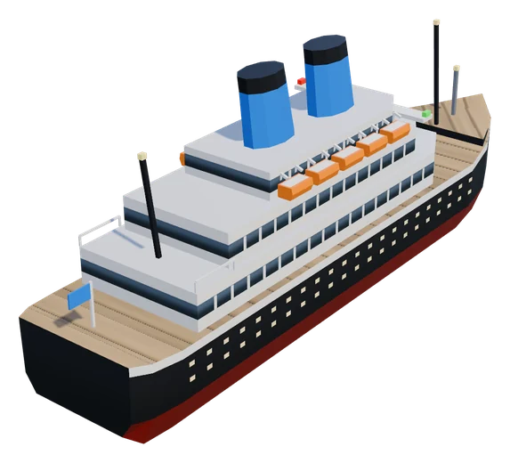
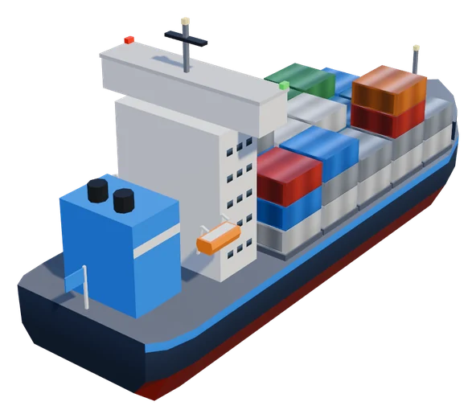

Barcos
Todos los barcos.
Lentos, espaciosos y baratos de mantener. Los barcos navegan entre muelles.
 Gull Ferry1950 · 69 km/h
Gull Ferry1950 · 69 km/h Tern Freighter1950 · 60 km/h
Tern Freighter1950 · 60 km/h Petrel Tanker1950 · 63 km/h
Petrel Tanker1950 · 63 km/h
Majestic Liner1958 · 78 km/h Skimmer Hydrofoil1972 · 138 km/h
Skimmer Hydrofoil1972 · 138 km/h
Atlas Box Carrier1980 · 87 km/h Granite Bulk Carrier1992 · 78 km/h
Granite Bulk Carrier1992 · 78 km/h Ripple Electric Ferry2020 · 117 km/h
Ripple Electric Ferry2020 · 117 km/h
| Modelo | Desde | Lleva | Capacidad | Velocidad | Precio | Funcionamiento, al año |
|---|---|---|---|---|---|---|
| Gull Ferry | 1950 | Pasajeros, Correo | 110 | 69 km/h | 40.000 $ | 4.000 $ |
| Tern Freighter | 1950 | Cualquier carga a granel | 150 | 60 km/h | 55.000 $ | 5.500 $ |
| Petrel Tanker | 1950 | Petróleo | 230 | 63 km/h | 65.000 $ | 5.500 $ |
| Majestic Liner | 1958 | Pasajeros, Correo | 300 | 78 km/h | 120.000 $ | 9.000 $ |
| Skimmer Hydrofoil | 1972 | Pasajeros, Correo | 90 | 138 km/h | 72.000 $ | 5.200 $ |
| Atlas Box Carrier | 1980 | Cualquier carga a granel | 330 | 87 km/h | 92.000 $ | 6.200 $ |
| Granite Bulk Carrier | 1992 | Cualquier carga a granel | 420 | 78 km/h | 110.000 $ | 7.000 $ |
| Ripple Electric Ferry | 2020 | Pasajeros, Correo | 130 | 117 km/h | 68.000 $ | 1.500 $ |
- Cualquier carga es toda carga menos pasajeros, coches. Cualquier carga a granel tampoco incluye correo, periódicos.
- La vida útil de este tipo es de 30 años: consulta Envejecimiento y renovación.